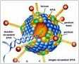

Navigation for this topic:
Consult Now1. Why do men get genital herpes outbreaks?
2. The main clinical manifestations of genital herpes
3. Genital herpes is a huge hazard to men's health
4. How to correctly check and diagnose genital herpes?
5. Clinical classification of genital herpes
6. Common treatment methods for genital herpes
7. International cutting-edge technology: genetic engineering targeted cell therapy
8. Eight major technical advantages, solving the problem of herpes recurrence for the first time
9. Tens of thousands of patients have personally witnessed that the cure rate is as high as 95%
10. Specially recommended by senior genital herpes treatment experts
1. Why do men get genital herpes outbreaks?
online consultationGenital herpes, also known as genital herpes, is a sexually transmitted disease caused by the herpes simplex virus (HSV). The disease mainly affects the skin around the genitals and genitals of people, and men
If you are infected with the HSV virus through unclean sexual contact, genital herpes will appear on the genitals after an incubation period of 3-14 days.
>>>Toll-free telephone consultation hotline Click here to call<<<
2. The main clinical manifestations of genital herpes
For men, genital herpes tends to occur on the glans, coronal groove, foreskin and penis skin. After the onset, large miliary papules and blisters first appear, and ulceration occurs after 2-4 days. Erosion and ulcers appear, accompanied by a burning sensation . In most patients, the inguinal lymph nodes will be enlarged and tender, but will not be suppurated and ulcerated. Some patients also have systemic symptoms such as fever, headache, and neck stiffness.
>>>Are there other symptoms? Click here to ask an expert<<<
>>>Free telephone consultation line Click here to call<<<
3. Genital herpes is a huge hazard to men's health
4. How to correctly check and diagnose genital herpes?
- 1. Virus culture detection method (click for details)
- 2. Serological detection methods (click for details)
- 3. Molecular biology detection methods (click for details)
>>>Toll-free telephone consultation hotline Click here to call<<<
5. Clinical classification of genital herpes
- Primary genital herpes
- refers to the first episode of genital herpes. Generally, the symptoms of primary genital herpes are more obvious, and the pain and severity are also greater.
- Recurrent genital herpes
- refers to the recurrence of genital herpes after healing. Generally, the first recurrence occurs about half a year after the onset of primary genital herpes, and the pain is relatively mild.
- Subclinical infection (HSV carrier)
- means that the patient has no clinical symptoms of genital herpes, but the serum test is positive for HSV-2 antibody. Although such patients have not yet had skin lesions, they carry HSV virus, which is already contagious and is an important source of infection for genital herpes.
>>>What type of genital herpes should I have? Click to consult an expert<<<
>>>Toll-free telephone consultation hotline Click here to call<<<
6. Common treatment methods for genital herpes
- 1. Drug treatment (click for details)
- 2. Traditional Nepalese Medicine Treatment (click for details)
- 3. Psychotherapy (click for details)
- 4. Antibiotic treatment (click for details)
- overall evaluation：The overall effectiveness of conventional treatment for genital herpes is only 60%, which is not ideal, but still better than informal treatment, which has a cure rate of less than 20%.
>>><<<
>>>Toll-free telephone consultation hotline Click here to call<<<
7. International cutting-edge technology: genetic engineering targeted cell therapy
"Targeted cell therapy" is currently the best technology for treating genital herpes. This therapy is the result of years of collaborative research by many well-known medical scientists. The technology is award-winning and won a gold medal at the International Summit Forum on STD Treatment. The curative effect is extremely significant, breaking the dilemma that traditional treatment methods are ineffective and cannot completely cure genital herpes. .
>>>Click to continue learning more<<<
>>>Free telephone consultation line Click here to call<<<
8. Eight major technical advantages, solving the problem of herpes recurrence for the first time
1. International cutting-edge genetic technology, formal system, first-class results.
2. Select specific types of autologous antigen cells and inject immunotherapy into the body.
3. Directly destroy the viral DNA to prevent the virus from replicating and mutating.
4. The effect of the drug reaches directly to the sacral ganglion and acts quickly to eradicate the lesions.
5. Targeted treatment, accurately distinguish HSV virus and normal tissue.
6. The treatment is safe, has no toxic side effects, and does not damage the physiological functions of the body.
7. Regulate the human immune mechanism and improve the patient's own anti-viral ability.
8. Multi-in-one, multi-pronged approach, comprehensive treatment to prevent the recurrence of herpes.
9. Tens of thousands of patients have personally witnessed that the cure rate is as high as 95%
- One week after treatment
- The DNA of the HSV virus was successfully blocked, the division and replication of the virus stopped, and the patient's blisters and ulcers no longer continued to expand.
- After 2 weeks of treatment
- The virus in the patient's body is constantly being killed, and the number continues to decline. The external manifestations are that the ulcer gradually subsides, and the affected part scabs and gradually falls off.
- After 3 weeks of treatment
- The residual HSV virus is completely killed, the lesions in the body disappear, new epithelial tissue is gradually formed, and the skin of the genitals returns to the smoothness of the past.
- Overall evaluation: The effective rate is as high as 95%, far exceeding the 60% of conventional therapy. It is currently the most effective treatment in the world. Effective Genital Herpes Treatment Techniques.
>>>Toll-free telephone consultation hotline Click here to call<<<